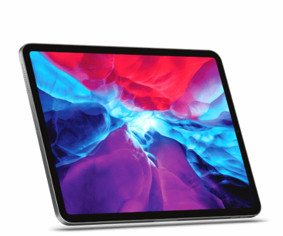
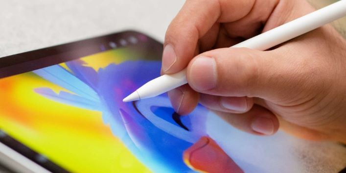
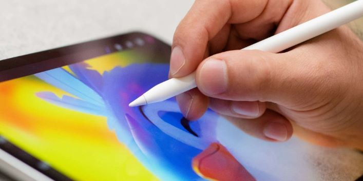
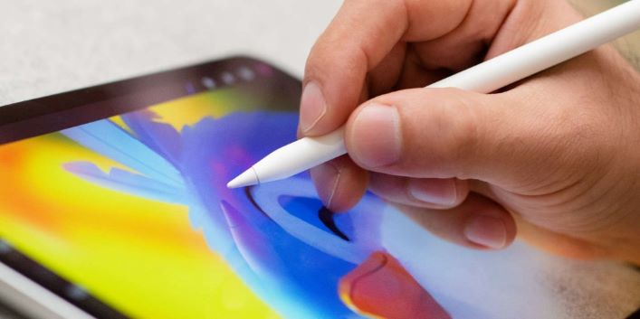
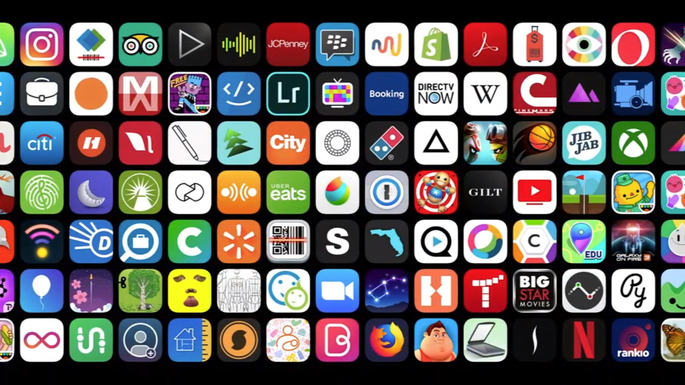

Caractéristiques
Cet IPad Pro présente :

Jusqu'a 1To d'espace
Plusieurs couleur : Argent et Gris cosmique
Une technologie qui évolue a travers
les années avec un écran de 12.9 Pouces
Et un écran LED allant jusqu'a 120 Hz
une autonomie jusqu'a 10h et un
processeur de haute qualité
Ce qui permettra de faire ses tâches en profitant
d'un écran d'une grande qualité tout en gardant un Face ID opérationnel
Doté d'une caméra de haute qualité
double caméra et le scanner LiDAR
qui permet de mesurer les distances
avec le processeur A12z pour des photos encore plus réaliste
D'une qualité équivalent au IPhone qui a comme ce dernier 3 caméra a l'arrière
Mais cela n'est pas tout !

Elle possède des applications comme la prise de note ou le célèbre Procreate
Qui est utilisé avec l'Apple Pencil !
Apple Pencil vous permet de tout faire avec un précision excellente
Prenez en mains votre âme d'artiste
Vous avez votre imagination comme seule limite
 


Et vous avez tellement d'application disponible

c'est a vous de faire de ce IPad votre experience personnelle et inoubliable